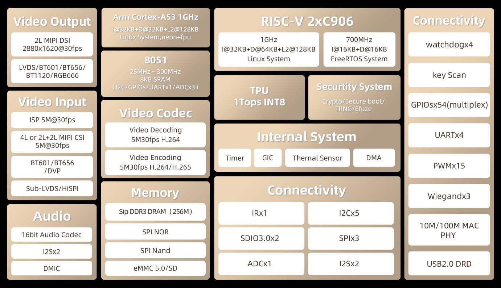

中文
中文MaixCAM MaixPy Pinmap 使用介绍
更新历史
| 日期 | 版本 | 作者 | 更新内容 |
|---|---|---|---|
| 2025-08-08 | 1.1.0 | Neucrack | 重构文档，更以于初学者理解 |
| 2024-06-11 | 1.0.0 | iawak9lkm | 初版文档 |
什么是引脚/管脚(Pin)
引脚就是芯片/开发板硬件物理上引出来的针脚，在芯片周围，看得见摸得着的，英文我们用Pin来表示。
什么是片上外设(Peripheral)
即芯片上（内置）的除了 CPU 计算核心以外的挂件，这里的“外”是相对于CPU 内核的外，和另外我们后面会说的片外模块则是指相对于整个芯片以外的模块区别。
比如下图是 MaixCAM/MaixCAM-Pro 芯片内部架构图：

我们可以看到核心有 2个 RISC-V 内核和一个 8051 内核，除此之外，还有很多外设比如GPIO/UART/H.264编解码器等等，可以成他们均为片上外设。
主要注意的是，这里的外设不一定需要引脚引出芯片，比如H.264编解码器也是一个外设，但是不需要引出引脚和外界交互。
另外需要注意，这里GPIO是一个外设功能，在芯片内部，和物理上引出芯片的的引脚Pin不等同。
引脚复用/引脚映射是什么
对于一些需要用引脚与外界交互的外设，比如GPIO / I2C， GPIO 可以控制引脚输入输出，I2C可以通过 2(SDA/SCL)两个引脚和其它芯片进行通信。
最简单的做法就是每个芯片引脚对应一个引脚Pin，比如上面的芯片架构图中GPIO 有54个，I2C有 5 个，一共需要54 + 2 x 5 = 64个引脚。
需要引脚的外设功能越多，需要引出芯片的引脚就越多，芯片体积就需要做得越大，而实际应用中往往不需要同时用54个GPIO功能和5个I2C，我们希望在外设和引脚之间加一个引脚复用电路，实现一个引脚可以切换到GPIO功能，也能切换到I2C功能，这样我们只需要引出很少的引脚就能实现我们的应用。
比如使用 50个引脚，其中10个引脚可以选择GPIO功能，也能选择成为I2C功能，这就是引脚复用，一般英文叫pinmux。
由于硬件设计限制，大多数芯片一个引脚只能映射几个固定的功能，比如对于MaixCAM-Pro 引脚映射入下图：

以右边的 A17引脚为例，它有三个功能GPIOA17 / UART0_RX / PWM5，我们可以根据需要选择这个引脚的功能，比如这个引脚默认功能是UART0_RX，我们想用PWM5这个功能，则需要设置引脚复用。
MaixPy 中提供了maix.peripheral.pinmap(也可以maix.pinmap) 这个模块来查询和设置引脚功能复用（引脚功能映射）。
另外， 引脚复用的好处可以参考
- 节省引脚数量：SoC 集成了大量的功能模块，如 CPU、GPU、内存控制器、I/O 接口、通信模块等。如果每个功能都分配独立的引脚，会导致需要的引脚数量非常庞大，增加封装的复杂性和成本。通过引脚复用，一个引脚可以在不同的模式下支持不同的功能，从而显著减少引脚的总数。
- 降低芯片封装和制造成本：减少引脚数量可以选择更小的封装尺寸，从而降低封装和制造成本。小封装不仅降低了材料成本，还减少了芯片在电路板上的占用空间，有利于设计更紧凑的电子产品。
- 提高设计灵活性：引脚复用提供了更大的设计灵活性。不同的应用场景可能需要不同的功能组合，通过软件配置可以根据具体需求启用不同的引脚功能。例如，同一个引脚在一个实际应用中可以作为 UART 通信接口，而在另一个实际应用中可以作为 SPI 总线接口。
- 简化 PCB 布局：减少引脚数量可以简化印刷电路板（PCB）的布局设计。更少的引脚意味着更少的布线层数和过孔，从而简化了 PCB 设计，降低了生产难度和成本。
- 优化性能：在某些情况下，通过复用引脚可以优化信号路径和性能。例如，通过选择适当的引脚功能组合，可以减少信号传输路径上的干扰和噪声，提高系统的整体性能和可靠性。
MaixPy 中使用 Pinmap
引脚功能图
MaixPy 支持不同的板型引出的引脚不同，这里提供了每个设备的引脚映射简图，更详细的可以看原理图或者芯片手册 Pinmux 章节：
| 设备型号 | 引脚简图 | 说明 | 完整原理图和芯片手册 |
|---|---|---|---|
| MaixCAM |  |
板子丝印比如A19是引脚名，GPIOA19/PWM7是功能名 |
在硬件资料 中查看 |
| MaixCAM-Pro | |
第一个名如A19是引脚名，对应GPIOA19/PWM7是功能名 |
在硬件资料 中查看 |
| MaixCAM2 |  |
第一个名如A2是引脚名，对应GPIOA2/SPI1_CS0是功能名 |
在硬件资料 中查看 |
注意，对于 MaixCAM2，原理图以及芯片资料中可能会有
GPIO1_A25这种写法，为了看起来更简洁，我们将其定义成B25，是等效的，又比如GPIO0_A2对应MaixPy中的GPIOA2，GPIO3_A2对应MaixPy中的C2。
即GPIOn这里n取值0对应了MaixPy中定义的A，1对应了B，GPIO1_A25的A25对应MaixPy中的25即去掉了A。
MaixPy 中映射引脚功能
介绍了那么多，其实 MaixPy 使用maix.pinmap.set_pin_function 函数即可设置引脚功能。
以设置MaixCAM/MaixCAM-Pro A17引脚为例：
from maix import pinmap
pinmap.set_pin_function("A17", "GPIOA17")
这里A17是引脚的名字，GPIOA17 是片上外设GPIO的功能名，我们就能把这个默认是UART0_RX的功能改为GPIO功能了，即便我们往芯片的UART0发送数据，由于变成了GPIO功能，芯片内部也收不到信息了。
设置完引脚功能后，比如这里是设置为GPIO，我们就可以按照GPIO使用 文档把这个引脚当作 GPIO 输出高低电平，或者读取电平使用了。
获得引脚所有功能
我们可以用maix.pinmap.get_pin_functions 函数获得一个引脚对应的所有功能：
from maix import pinmap
funcs = pinmap.get_pin_functions("A17")
print(funcs)
也可以打印所有引脚和对应的所有功能：
from maix.peripheral import pinmap
print("All pins of MaixCAM:")
print(pinmap.get_pins())
print("All pin's functions:")
for pin in pinmap.get_pins():
funcs = pinmap.get_pin_functions(pin)
print(f"{pin:10s}: {', '.join(funcs)}")
查询引脚当前功能
可以获取到当前引脚设置的功能，注意这个函数对不同板型的支持程度可能不用：
MaixCAM / MaixCAM-Pro: 映射信息储存在一个数组里，不是直接从硬件获取，所以需要先设置过，得到的信息才是准确的。（有兴趣可以提交 PR 优化， 源码在这里）MaixCAM2：支持直接从硬件获取当前设置的功能，能准确无误查询到当前的功能。
from maix import pinmap
func = pinmap.get_pin_function("A17")
print(func)
更多例程
在MaixPy 中可以看到更多例程。
API 文档
更详细的 Pinmap 的 API 说明请看 Pinmap API 文档
引脚默认功能和注意点
需要注意的是，引脚默认用做不同用途，使用时应注意：
| 设备型号 | 引脚简图 | 默认功能 | 需要注意的引脚 |
|---|---|---|---|
| MaixCAM | |
参考 MaixCAM-Pro |
1. UART0是系统日志+默认串口WiFi(SDIO1 + A26)。 2. A14 默认是系统状态灯，初始化为GPIO后可以当作普通输出GPIO使用。3. user按键默认系统已经有 key驱动用来检测按键按下，不建议用GPIO读取。4. 再次强调 IO 是 3.3v电平，不要直接接5v电压。 |
| MaixCAM-Pro | |
1. 参考外壳丝印，比如29就是GPIO，RX 就是串口；2. 6pin 默认UART和I2C |
1. 同 MaixCAM。2. B3 接了一个照明LED ，高电平使能。 |
| MaixCAM2 | |
1. 参考外壳丝印, 比如A4就是GPIO，U2R 就是串口；2. 6pin 默认UART和I2C |
1. B25 接了一个照明LED，高电平使能。2. A6引脚接了系统状态灯，初始化为GPIO后可以当作普通输出GPIO使用。3. 再次强调 IO 是 3.3v电平，不要直接接5v电压。 |